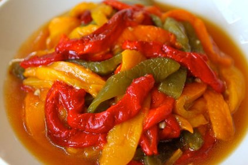

Roasted Pepper Salad
Ingredients
- 8 large red, yellow, and green bell peppers
- 1/3 cup extra virgin olive oil
- 6 fresh basil leaves, torn into pices
- 2 garlic cloves, thinly sliced
- Salt and pepper to taste
Directions
- Cover the broiler par with foil.
- Place the peppers on the pan and place in the broiler so that the peppers are about 3 inches from the heat.
- Turn the broiler on high. Broil the peppers, turning them frequently, until the skin blisters and they are charred all over.
- Put the peppers in a bowl, cover with foil, and let cool. Cut the peppers in half, draining the juices into a bowl.
- Peel off the skin and discard the seed and stems. Cut the peppers lengthwise into 1 inch strips and place in a serving bowl.
- Strain the juices over the peppers. Add the olive oil, basil, garlic, and salt and pepper to taste.
- Let marinate for a least 30 minutes before serving.